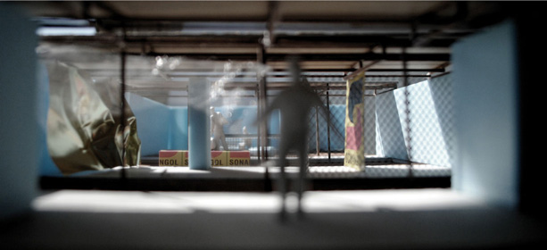
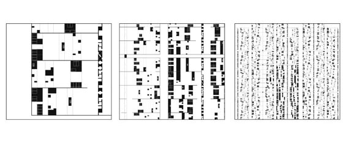
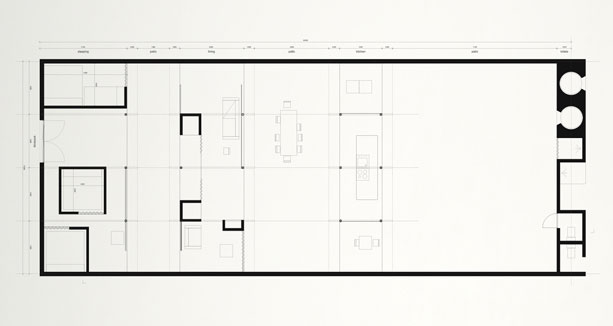
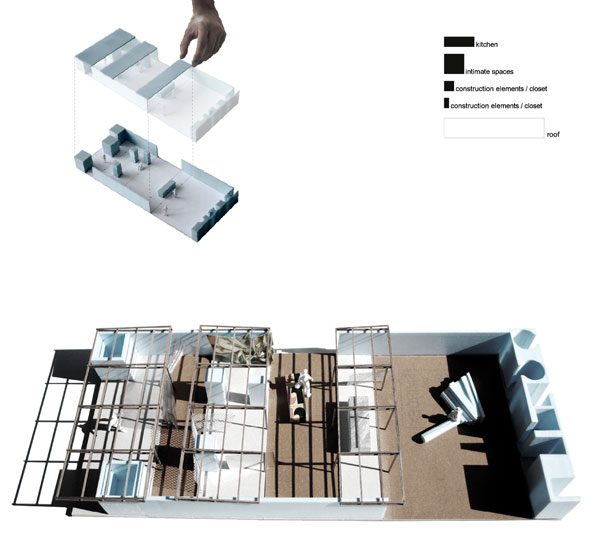

Empire
Competition - Housing - Luanda - 2010

New City
While in the center of Luanda the glass high rise is the new black, inequity is still the rule: a very rich country, with a very poor population (40% lives bellow poverty line). The build symbols of the ruling economic power can become easy targets for the famine. Its materials and content will provide the missing luxury in the newly build homes.


A House
By distributing all the private areas inside the perimeter of the plot, the house becomes an open field of 250 sqm. The low construction budget is to be spent on a formal stable construction framework which allows for a post-occupancy according to the taste and possibilities of the future inhabitants. A gradient of privacy is achieved by the occupants that decide where they concentrate the sleeping areas and storage spaces. Where the perimeter brick wall is missing, one can have contact with the neighboring plots, expanding the boundaries of the patios from the family to the community. The abandoned elements of the empire are here collected and shared, transforming from symbols of opulence into objects of the everyday (a Doric column becomes a bench, a mercedes hood a large table, etc). The last border is a wall that collects all the services, and keeps the sanitary within comfortable distance from the house. This linear element connects all the patios on the top in a open gallery, from where it is possible to overlook the capital skyline crumbling far away.

Team: João Prates Ruivo, Raquel Maria Oliveira. Client: Lisbon Architecture Triennale.